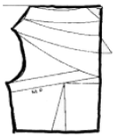
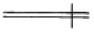
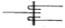
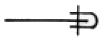

패션디자인산업기사 (2007-05-13 기출문제)
1과목: 피복재료학
1. 다음 호료(糊料) 중 수용성이 아닌 것은?
- 전분
- 젤라틴
- P.V.A
- 알킬산나트륨
(정답률: 알수없음)

2. 제직 과정 중 위사투입에 해당되는 것은?
- 개구
- 북침
- 바디침
- 중광위치 교환
(정답률: 알수없음)
3. 비스코스레이온(Viscose Rayon)의 방사 방법은?
- 건식방사
- 용융방사
- 습식방사
- 중합방사
(정답률: 알수없음)
4. 아크릴 섬유(acrylic fibers)를 제조할 때 주로 사용하는 용제는?
- 아세톤
- 염화메틸렌
- 디메틸포름아미드
- 개미산
(정답률: 알수없음)
5. 아크릴계섬유용의 새로운 개질 염료로, 카티온 염료라고도 불리어지는 염료는?
- 직접염료
- 산성염료
- 염기성염료
- 분산염료
(정답률: 알수없음)
6. 다음 천염섬유 중 필라멘트 섬유는?
- 마
- 견
- 양모
- 면
(정답률: 알수없음)
7. 견섬유의 단면구조가 삼각형인 것과 가장 밀접한 관계가 있는 특성은?
- 광택
- 강신도
- 염색성
- 흡습성
(정답률: 알수없음)
8. 방적 과정을 통해 꼬임을 주어 결합시킴으로서 길게 이어지는 방적사를 구성하는 섬유는?
- 멀티필라멘트(multi-filament)
- 스테이플 파이버(staple fiber)
- 모노필라멘트(mono-filament)
- 로프(rope)
(정답률: 알수없음)
9. 아크릴 섬유에 관한 설명으로 틀린 것은?
- 내일광성이 우수하여 옥회용에 적합하다.
- 불에 잘 타지 않아 카펫, 커튼 등에 적합하다.
- 가볍고 촉감이 부드럽다.
- 레질리언스가 비교적 좋다.
(정답률: 알수없음)
10. 다음 중 흡습성이 가장 큰 섬유는?
- 비스코스레이온
- 아세테이트
- 면
- 아크릴
(정답률: 알수없음)
11. 다음 중 복잡한 무늬를 나타내는데 이용되는 장치는?
- 방적기
- 자카드직기
- 수직기
- 환편기
(정답률: 알수없음)
12. KS에서 정한 공정수분율을 표시한 것 중 옳은 것은?
- 면-12%
- 아마-7%
- 양모-18.25%
- 나일론-0.4%
(정답률: 알수없음)
13. 양모의 가장 대표적인 품종으로 가장 좋은 품질의 양모는?
- 메리노종
- 링컨종
- 헴프셔종
- 레스터종
(정답률: 알수없음)
14. 직물에서 실의 꼬임에 의해 직면(織面)에 나타나는 파상 및 입상의 주름은?
- 꼬임
- 권축
- 마디
- 비결정
(정답률: 알수없음)
15. 다음 중 표준수분율과 공정수분율이 같은 섬유는?
- 면
- 양모
- 폴리에스테르
- 나일론
(정답률: 알수없음)
16. 제직할 때 두 개의 경사 빔의 장력을 달리해서 경사방향으로 요철의 줄무늬를 이루는 직물은?
- 크레이프
- 포플린
- 서어지
- 시어서커
(정답률: 알수없음)
17. 다음 직물의 조직 중 실의 굴곡이 가장 적고, 교착점이 적어서 유연하며, 표면이 매끄러워 표면에 광택이 좋은 것은?
- 평직
- 주자직
- 사문직
- 이중직
(정답률: 알수없음)
18. 다음 직물 중 주자직(sateen)으로 제직된 것은?
- 공단
- 데님
- 개버딘
- 포플린
(정답률: 알수없음)
19. 면 섬유의 형태에 대한 설명으로 옳은 것은?
- 천연 꼬임은 섬유가 섬세할수록 줄어 든다.
- 면 섬유의 측면에 곳곳에 마디 모양이 있다.
- 제2차막의 피브릴(fibril)이 섬유의 길이방향과 이루는 각은 20~45° 내외이다.
- 제2차막 내부에 제1차막층이 있다.
(정답률: 알수없음)
20. 다음 천연섬유 중 섬유의 길이와 굵기의 비가 가장 큰 것은?
- 면
- 양모
- 아마
- 견
(정답률: 알수없음)
2과목: 패션디자인론
21. 색광의 삼원색을 혼합하였을 때 나타나는 새긍ㄴ?
- 검정
- 회색
- 흰색
- 노랑
(정답률: 알수없음)
22. 어떤 특정 디자인 요소를 우세하게 하여 흥미의 중심점이 되게 하며, 디자인에서 가장 중요한 부분에 주의를 집중되게 하는 디자인 원리는?
- 균형
- 비례
- 착시
- 강조
(정답률: 알수없음)
23. 다음 문양 중 일정한 목적을 달성하기 위하여 가장 잘 전달할 수 있는 형태를 고안해 내는 의도적이고 독창적인 것을 시각화한 것은?
- 자연문양
- 인공문양
- 상징문양
- 상상문양
(정답률: 알수없음)
24. 다음 중 허리선의 종류에 해당되지 않는 것은?
- 하이라이즈(high-rise)
- 포인티드(pointed)
- 밴디드(banded)
- 페그드(pegged)
(정답률: 알수없음)
25. 다음 설명 중 틀린 것은?
- 의복의 실루엣은 인체의 구조와 조화를 이루며 시대적인 아름다움을 표현해야 한다.
- 현대와 같이 활동적이며 빠른 생활속도에는 기능적이고 활동적인 실루엣이 무엇보다 중요하다.
- 허리선이나 어깨선과 같이 의복의 주도니 솔기의 위치는 인체의 허리나 어깨와 지나치게 차이가 나지 않아야 한다.
- 의복의 실루엣은 인체의 선을 전부 노출 시키거나 전부 감추어야 한다.
(정답률: 알수없음)
26. 디자인 원리 중 방사선 리듬에 해당되는 것은?
- 재킷(jacket)앞 여밈에 한 줄로 배열된 단추들
- 가운데 주름을 넣어 실용성을 강조한 포켓(pocket)
- 플레어 스커트(flared skirt)의 드레이프(drape)
- 핀턱(pin tuck)을 일정하게 사용한 블라우스
(정답률: 알수없음)
27. 다음 중 소매의 변형 형태가 다른 것은?
- loose sleeve
- straight sleeve
- balloon sleeve
- dolman sleeve
(정답률: 알수없음)
28. 다음 중 운동감, 유연성 부드러움을 느끼게 하는 균형은?
- 대칭 균형
- 수직적 균형
- 비대칭 균형
- 방사적 균형
(정답률: 알수없음)
29. 패션 디자이너가 추구하는 3개 목표를 가장 적절히 표현한 것은?
- 미의 추구, 유행성, 기능성의 증대
- 디자인 요소의 조화, 표현욕구의 증대, 기능성의 증대
- 디자인 요소의 조화, 적합성의 증대, 미의 추구
- 디자인 요소의 축소, 유행성, 적합성의 증대
(정답률: 알수없음)
30. 패드(fad)의 특성이 아닌 것은?
- 여고생, 여대생 등의 특정집단에서 유행한다
- 눈에 잘 띄도록 디자인되는 것이다.
- 액세서리에 흔히 나타난다.
- 클래식과 반대로 유행기간이 길다.
(정답률: 알수없음)
31. 인체에 맞게 몸통을 감싸고 팔에는 소매, 다리에는 바지 또는 스커트를 입힌 형태로, 추운 지역에서 의복으로 사용한 모피를 꿰매는 기술이 발달된 의복 형태는?
- 드레이퍼리(drapery) 형태
- 머리로 쓰는 형태
- 테일러드(tailored) 형태
- 앞이 터진 형태
(정답률: 알수없음)
32. 어패럴에서 요구되는 소재의 특성 중 기능성에 해당되는 사항이 아닌 것은?
- 더위와 추위로부터 몸을 보호한다.
- 보건, 위생적이며 착탈이 용이하고, 활동하기 편하다.
- 몸을 부드럽게 감싼다.
- 형태안정성이 좋다.
(정답률: 알수없음)
33. 신체를 감싸는 의복이나 피복 장식을 모두 포함한 것을 가리키는 용어는?
- 의복
- 복장
- 의상
- 복식
(정답률: 알수없음)
34. 디자인의 원리 중 강조에 대한 설명으로 틀린 것은?
- 의복의 강조점이 착용자를 돋보일 수 있게 네트라인 근처로 하는 것이 바람직하다.
- 임산부의 경우 큰 카라 리본을 네크라인 근처에 달아 시선을 배에서 멀어지게 한다.
- 레이스, 비치는 옷감, 광택있는 옷감에 화려한 장식을 해서 평상복으로 사용한다.
- 일상복이나 통근복에는 약하거나 눈에 안 띄는 강조점이 사용된다.
(정답률: 알수없음)
35. 활동적이고 스포티한 느낌을 주려면 색채의 중량감을 어떻게 이용하면 가장 효과적인가?
- 무거운 색채를 하의에 가벼운 색채를 상의에 사용한다.
- 무거운 색채를 상의에 가벼운 색채를 하의에 사용한다.
- 상의와 하의에 모두 무거운 색채를 사용한다.
- 상의와 하의에 모두 가벼운 색체를 사용한다.
(정답률: 알수없음)
36. 다음 중 제품 생산을 위하여 작성하는 작업지시서에 많이 사용되는 그림의 종류는?
- 자태화
- 도식화
- 착장화
- 데생
(정답률: 알수없음)
37. 세로선에 의한 착시 현상을 바르게 설명한 것은?
- 한 개의 세로 선에 의하여 분할된 면은 분할되지 않은 면에 비하여 길어 보인다.
- 유사한 간격의 여러 세로 선으로 분할 된 면은 폭이 좁아 보인다.
- 세로선 사이의 간격이 넓게 분할된 면은 더 좁아 보인다.
- 동일한 수의 세로 선으로 면을 분할할 때에 세로선 사이의 간격이 넓어지면 더 폭이 좁아 보인다.
(정답률: 알수없음)
38. 기후가 온화한 곳에서도 복식이 발달하였다는 것은 어떤 설에 대해 반박하는 내용인가?
- 심리적보호설
- 신체보호설
- 정숙성설
- 비정숙성설
(정답률: 알수없음)
39. 비대칭 균형에 의해 디자인된 의상의 특징적인 느낌은?
- 보수적인 느낌
- 율동감
- 평범함
- 단조로움
(정답률: 알수없음)
40. 다음 그림과 같이 드레이퍼리(drapery)의 주름선이 자연스럽게 변화하는 리듬감은?
- 전환 리듬
- 점진적 리듬
- 방사선 리듬
- 교체 리듬
(정답률: 알수없음)
3과목: 의류상품학 및 복식문화사
41. 그리스 복식의 특징이 아닌 것은?
- 재단이나 바느질을 하지 않고 옷감을 몸에 느슨하게 걸치는 형태이다.
- 신체의 곡선에 따라 자연스럽게 형성되는 주름이 리듬과 율동감을 창조한다.
- 옷감을 몸에 걸치고 어깨에서 고정시킬 때 페폴로스를 사용하였다.
- 옷감을 걸치는 방법에 따라 옷 모양에 변화를 줄 수 있다.
(정답률: 알수없음)
42. 소매점에서 매상과 이익확보를 위한 고회전 상품으로, 별로 유행을 타지 않으며, 가격의 고저에도 크게 상관이 없는 상품은?
- 기본상품
- 중점상품
- 보완상품
- 전략상품
(정답률: 알수없음)
43. 복식의 유행 현상을 일으키는 인간의 심리적 요인으로 가장 적합한 것은?
- 사회적 관습
- 자기 표현의 욕구
- 법적인 통제
- 전통적인 가치관
(정답률: 알수없음)
44. 패션기업에서 강조하는 5R(5적운동)에 해당되지 않는 것은?
- 적절한 상품
- 적절한 수요
- 적절한 장소
- 적절한 가격
(정답률: 알수없음)
45. 바로크 양식의 복식으로, 목을 보호하기 위해 감기 시작한 것으로 남자 넥타이의 초기 형태라 할 수 있는 것은?
- 로룸
- 타블리온
- 크라바트
- 세그먼티
(정답률: 알수없음)
46. 상향 전파이론과 관련된 설명 중 틀린 것은?
- 사회 하위문화 집단의 패션이 사회전반에 전파되는 현상이다.
- 1904년 사회학자 심멜(George Simmel)에 의해 발표되었다.
- 1960년대 미니스커트와 부츠가 그 대표적인 예이다.
- 하위문화 집단은 소수민족, 청소년, 노동자, 윤락여성 등이 해당된다.
(정답률: 알수없음)
47. 패션산업의 발전에 있어 1920~1930년대의 패션 혁명기에 활동한 디자이너는?
- 가브리엘 샤넬
- 피에르 가르뎅
- 크리스찬 디올
- 이브 생 로랑
(정답률: 알수없음)
48. 1850년대에 일어난 남자 의복에 가장 큰 변화는 남자들의 코트와 바지를 다른 색과 옷감으로 만들어오던 것을 한 가지 옷감으로 만들게 된 것으로, 1859년에 처음으로 바지, 코트, 조끼를 모두 동일색과 직물로 만들어 소개된 것은?
- 프록 코트(frock coat)
- 디토 슈트(sitto suit)
- 맥시 코트(maxi coat)
- 개릭(garrick)
(정답률: 알수없음)
49. 다음 중 1990년대 복식에 해당되는 것은?
- 리사이클 패션(recyle fashion)
- 펑크 패션(punk fashion)
- 오리엔탈리즘 패션(orientalism fashion)
- 히피 패션(hippy fashion)
(정답률: 알수없음)
50. 1910년대의 복식으로 여성의 자연스러운 신체의 곡선을 살리는 동양적인 스타일이라고 볼 수 없는 것은?
- 호불 스커트(hobble skirt)
- 슬림 앤드 롱 실루엣(slim and long silhouette)
- 기모노 슬리브(kimono sleeve)
- 미나렛 튜닉(minaret tunic)
(정답률: 알수없음)
51. 쥐스토꼬르(justaucorps)에 관한 설명으로 틀린 것은?
- 상체부분은 인체에 꼭 맞고 스커트 부분은 플레어로 폭이 넓어졌다.
- 로코코시대에 새롭게 나타난 의복이다.
- 속에 베스트를 착용하고 무릎길이의 바지와 함께 입는 웃옷으로 장착되었다.
- 무릎길이로 허리선 가까운 위치에 포켓이 있다.
(정답률: 알수없음)
52. 키톤 위에 걸쳐 입는 겉옷으로 남녀가 모두 사용하는 것으로, 재료는 직사각형의 모직 천이고, 착용방법이 다양한 그리스 시대의 복식은?
- 팔라(palla)
- 로롬(lorum)
- 스톨라(stola)
- 히마티온(himation)
(정답률: 알수없음)
53. 18세기 로코코 시대에 나타난 것으로 후프로 스커트의 모양을 여성다운 감각이 드러나도록 한 페티코트는?
- 빠니에
- 외투
- 가운
- 바지
(정답률: 알수없음)
54. 14세기 들어와 갑옷이 체인(chain) 연결형이나 비늘모양의 형태에서 금속판 갑옷(plate)으로 변하게 되어 남자들이 갑옷 속에 입었던 옷은?
- 쉬르코(surcot)
- 꼬다르디(cotehardie)
- 우쁠랑드(houppelande)
- 뿌르쁘웽(pourpoint)
(정답률: 알수없음)
55. 다음 중 디스플레이의 가장 큰 목적은?
- 소비자의 흥미 유발
- 소비자의 정보 산포
- 소비자의 충성도 형성
- 소비자의 구매행위 자극
(정답률: 알수없음)
56. 시장 정보 중 경쟁사 정보에 속하지 않는 것은?
- 판매 및 판촉 전략 조사
- 판매외형 및 마켓 셰어와 판매율 조사
- 해외 기술제휴에 관한 정보 조사
- 소비자 선호도 조사
(정답률: 알수없음)
57. 저널리스트의 입장에서 독자에게 상품에 대한 뉴스로 흥미를 유도하는 방향으로 전개하는 것은?
- 광고
- 디스플레이
- 홍보
- 에프터서비스
(정답률: 알수없음)
58. 패션머천다이징에 필요한 정보와 관련된 항목의 연결로 틀린 것은?
- 소비자 정보-브랜드별 고객의 라이프스타일 분석, 구매동기 및 구매패턴 조사
- 마케팅 환경정보-부자재나 액세서리 개발, 컴퓨터의 도입 및 활용
- 시장정보-분야별 시장규모, 연간 시장성장률 및 성장 추이
- 판매실적정보-매출실적 분석, 표적시장의 확인
(정답률: 알수없음)
59. 마케팅 믹스(marketing mix)의 4P's란?
- 제품계획, 가격구조, 판매촉진 황동, 유통구조
- 제품계획, 상품구색, 적절한 물량, 유통구조
- 제품계획, 상품구색, 가격구조, 판매촉진 활동
- 제품계획, 적절한 시기, 판매촉진 활동, 적절한 물량
(정답률: 알수없음)
60. 비잔틴 시대의 기본 복식에 해당되지 않는 것은?
- 튜닉(tunic)
- 호즈(hose)
- 팔루다멘튬(paludamentum)
- 달마티카(dalmatica)
(정답률: 알수없음)
4과목: 패턴공학 및 의복구성학
61. 슬랙스 제도가 완성된 후 제도상의 밑위의 앞뒤 길이를 줄자로 재어 보아, 인체상의 앞뒤 밑위 길이 치수에 얼마의 여유분이 들어 있으면 적당한가?
- 실측치수와 제도상의 치수가 동일
- 0.5cm 정도
- 2~2.5cm 정도
- 5~5.5cm 정도
(정답률: 알수없음)
62. 재봉사 2종류 이상이 서로 얽어지면서 만들어지는 봉환들로 보통 본봉이라고 부르는 스티치는?
- 체인 스티치(chain stitch)
- 핸드 스티치(hand stitch)
- 록 스티치(lock stitch)
- 오버에지 스티치(overedge stitch)
(정답률: 알수없음)
63. 다음 패턴과 같은 네크 라인(neck line)의 명칭은?

- 홀터 네크 라인
- 하이 네크 라인
- 카울 네크 라인
- 스퀘어 네크 라인
(정답률: 알수없음)
64. 다음 중 마틴식 인체 계측기구에 해당 되지 않는 것은?
- 인체각도계
- 신장계
- 간상계
- 활동계
(정답률: 알수없음)
65. 다음 칼라 중 플랫 칼라와 같은 종류에 속하는 것은?
- 케이프 칼라
- 숄 칼라
- 오블롱 칼라
- 윙 칼라
(정답률: 알수없음)
66. 바느질 방법에 따른 시접분량으로 옳은 것은?
- 통솔-1cm 정도
- 쌈솔-3.5cm 정도
- 가름솔-1.5cm 정도
- 누빔솔-4.5cm 정도
(정답률: 알수없음)
67. 재봉기의 일반적인 분류 중 대분류에서 단환봉 재봉기의 분류기호는?
- A
- D
- L
- C
(정답률: 알수없음)
68. 의복의 장식 바느질법이 아닌 것은?
- 패거팅(fagoting)
- 개더(gather)
- 오그리기(shrinking)
- 파이핑(piping)
(정답률: 알수없음)
69. 인체계측 시 재는 방법으로 틀린 것은?
- 등길이는 목옆점에서 허리선까지를 잰다.
- 어깨너비는 좌우 어깨 끝점 사이의 길이를 잰다.
- 가슴너비는 좌우 가슴 너비점 사이의 길이를 잰다.
- 허리둘레는 허리의 제일 가는 부위를 돌려서 잰다.
(정답률: 알수없음)
70. 의복 생산시스템 줄 번들 시스템(bundle system)의 특징으로 옳은 것은?
- 한 묶음이 끝날 때까지 중간재고가 감소된다.
- 기계의 가동률이 높다.
- 공정의 진행상황을 파악하기 쉽다.
- 작업자당 차지하는 면적이 좁다.
(정답률: 알수없음)
71. 옷감에 패턴을 배치하기 위한 방법 중 틀린 것은?
- 옷감의 표면이 안으로 되게 반을 접어 패턴을 배치한다.
- 패턴은 큰 것부터 배치하고 작은 것은 큰 것 사이에 배치한다.
- 체크무늬는 두 겹으로 접어 좌우의 무늬를 맞추고 한번에 재단한다.
- 줄무늬는 옷감 정리에서 줄을 바르게 정리한 다음 배치한다.
(정답률: 알수없음)
72. 주름잡는 위치에 따라 슬리브의 종류가 달라지며, 주름 잡는 모양에 따라 슬리브 모양과 어깨 모양이 달라지는 소매는?
- 퍼프 소매(puff sleeve)
- 벨 소매(bell sleeve)
- 래글런 소매(raglan sleeve)
- 돌먼 소매(dolman sleeve)
(정답률: 알수없음)
73. 다음 체형 중 출생 후 성인에 이르기까지 가장 크게 변화되는 것은?
- 키
- 몸무게
- 가슴둘레
- 머리둘레
(정답률: 알수없음)
74. 칼라, 포켓의 가장자리나 단 등에 이용하며, 장식효과와 더불어 형태를 안정시키는 역할을 하며 스포티한 느낌을 주는 바느질은?
- 실표뜨기
- 공그리기
- 상침
- 팔자뜨기
(정답률: 알수없음)
75. 가봉 시 주의할 내용에 대한 설명으로 틀린 것은?
- 실은 면사를 사용하고, 얇은 직물은 한 올로 하고, 두꺼운 직물은 두 올로 한다.
- 단추는 같은 크기로 종이나 옷감을 잘라서 일정한 위치에 붙인다.
- 바늘은 옷감에 수평으로 꽃아 옷감이 울지 않게 하고 실이 다소 늘어나게 한다.
- 칼라, 커프스, 주머니 등은 가봉 후에 재단하는 것이 경제적이다.
(정답률: 알수없음)
76. 2매 이상의 원단을 포개놓고 가장자리에서 일정거리를 유지하면서 한줄 또는 그 이상으로 봉제하는 Superimposed Seams은?



(정답률: 알수없음)
77. 봉제공정에서 공수(工數)의 의미는?
- 작업량을 시간으로 나타내는 단위
- 봉제공정 단계를 나타내는 단위
- 스티치의 수를 세는 단위
- 일일 작업자 수를 세는 단위
(정답률: 알수없음)
78. 다음의 실과 바늘에 관한 설명으로 옳은 것은?
- 데니어는 실의 굵기를 나타내는 표시방법이다.
- 면사 번수는 숫자가 클수록 굵은 실이다.
- 손바늘은 바늘 번호가 클수록 두꺼운 옷감에 사용한다.
- 재봉기바늘은 바늘 번호가 클수록 얇은 옷감에 사용한다.
(정답률: 알수없음)
79. 다음 중 시접의 올이 풀리지 않게 처리하는 방법이 아닌 것은?
- 오버룩
- 휘갑치기
- 접어박기
- 팔자뜨기
(정답률: 알수없음)
80. 재봉기에서 반달에 홈이 생겼을 때 나타나는 현상은?
- 바늘이 부러진다.
- 윗실이 끊어진다.
- 밑실이 끊어진다.
- 땀이 건너뛴다.
(정답률: 알수없음)